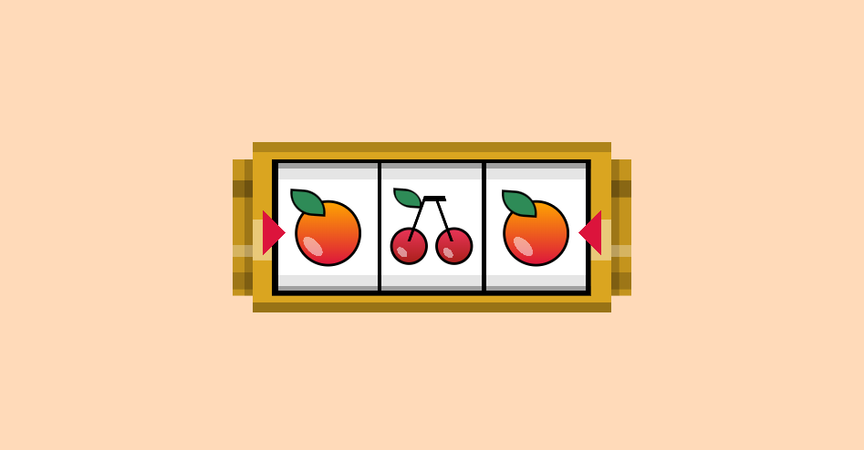

<body>
    Referencia tomada de <a href="https://a.singlediv.com"> singlediv</a> 
    <p>La imagen tomada como referencia no tenía animación, pero para que se vea más bonito se le añadió</p>
    
</body>